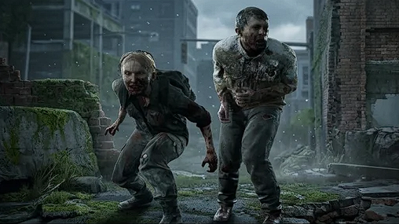
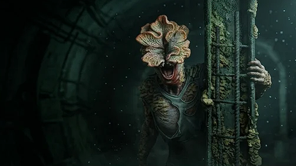
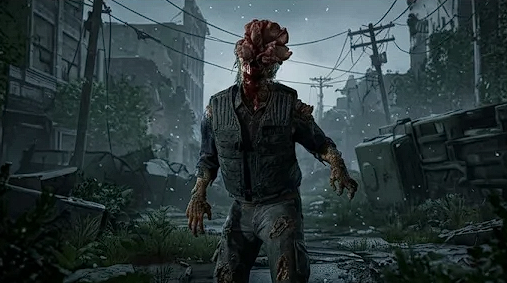
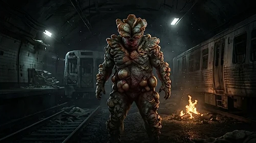

1. Corredores
Etapa: Días de infección.
Mantienen la forma humana casi intacta. Son muy rápidos, agresivos y atacan en jaurías. Todavía conservan la vista intacta.
Subir
Si estás leyendo esto, lograste sobrevivir al colapso. Esta página es un espacio dedicado a los recuerdos de la travesía por Estados Unidos, las amenazas del Cordyceps y los momentos más memorables de la obra maestra de Naughty Dog.
En septiembre de 2013, una cepa mutante del hongo Cordyceps se propagó masivamente a través de cultivos y alimentos contaminados. En cuestión de días, el parásito tomó el control del sistema nervioso central de millones de personas, desatando el caos y destruyendo la civilización humana.
En medio del colapso en Austin, Texas, Joel Miller sufrió la trágica pérdida de su hija Sarah a manos de un soldado. Veinte años después, el mundo está dominado por la naturaleza y administrado con mano de hierro por las Zonas de Cuarentena de FEDRA. Es ahí donde Joel conoce a Ellie, una adolescente inmune de 14 años, comenzando un viaje que cambiará sus vidas para siempre.
El hongo Cordyceps altera la mente del huésped mientras sigue vivo biológicamente. A medida que pasan los meses y años, la infección atraviesa distintas etapas evolutivas:

Etapa: Días de infección.
Mantienen la forma humana casi intacta. Son muy rápidos, agresivos y atacan en jaurías. Todavía conservan la vista intacta.

Etapa: Semanas a meses.
El hongo empieza a brotar por su rostro. Son sigilosos, se esconden tras las esquinas en ruinas y emboscan cuando te descuidas.

Etapa: Más de 1 año.
El hongo cubrió totalmente sus ojos, dejándolos ciegos. Se guían por ecolocalización emitiendo chasquidos escalofriantes. Letales en el combate cercano.

Etapa: Varios años.
El hongo cubrió su cuerpo como una armadura gruesa. Poseen una fuerza descomunal y arrancan trozos de su cuerpo para lanzarlos como bombas de esporas.
— ¡Ah, cielos! ¿Qué le pasó al grandote?
— Odio interrumpir la lección de biología, pero... ¿podemos irnos de aquí, por favor?
El irónico intercambio de diálogos entre Ellie, Joel y Bill justo después de sobrevivir al primer y terrorífico encuentro con el Gordinflón en la escuela de Lincoln.
El conmovedor y pacífico encuentro con la manada de jirafas en Salt Lake City. Un respiro de belleza humana entre los escombros, antes de llegar al trágico y polémico final del viaje.
Las icónicas conversaciones opcionales donde Ellie saca su libro de chistes malos e intenta, sin mucho éxito, hacer reír a un Joel totalmente agotado y sin paciencia en medio del silencio del apocalipsis.
"Lo juro." — "Bien..." La desgarradora escena en las afueras de Jackson que cierra el viaje con un secreto guardado entre Joel y Ellie.